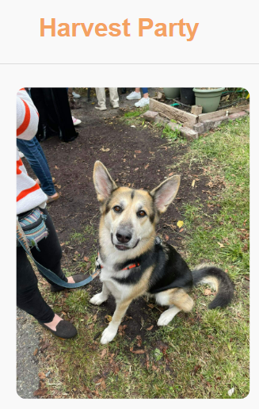

Exploratory data analysis, and Tableau summary, of an annual fundraiser. Comes with a website doubling as financial transparency to encourage donations. Python, Javascript, Tableau.
Project Overview
The Harvest Party project is a multifaceted initiative aimed at analyzing and visualizing the financial data of an annual fundraiser benefiting the Capital Area Food Bank in Washington, D.C. The project began with an extensive exploratory data analysis (EDA) using Python, where I cleaned and organized several years' worth of chaotic financial data. This analysis uncovered key trends in expenditures, donations, and attendance, providing a solid foundation for further visualization efforts.
Building on the insights from the EDA, I developed a series of interactive visualizations using Tableau. These visualizations were designed to clearly communicate the financial health of the fundraiser to stakeholders, helping them understand how funds were allocated and where efficiencies could be made in future events. The visualizations include a variety of charts, such as expenditure breakdowns by category, donation trends over time, and an analysis of cost per attendee, all of which are accessible via the link above.
To bring these insights to the public and ensure transparency, I built a mobile-responsive website using JavaScript. The website is designed as a comprehensive resource for stakeholders and donors, offering interactive visualizations that provide a transparent view of the fundraiser’s finances. The site features a range of tools, including dynamic charts, an image carousel, and thematic elements like the 2020 COVID-19 masks animation. This project not only serves as a platform for financial transparency but also as a tool to engage donors, build trust, and assist the planning committee in making data-driven decisions to optimize future events.
Gallery




References
Dataset provided by the Harvest Party Planning Committee.